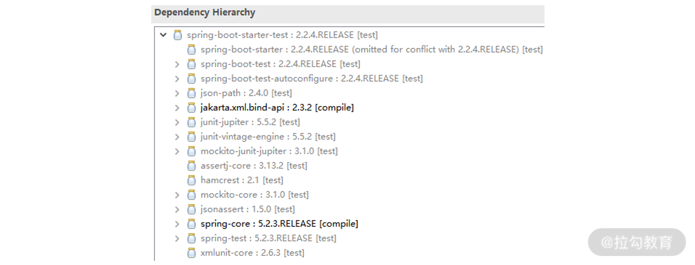
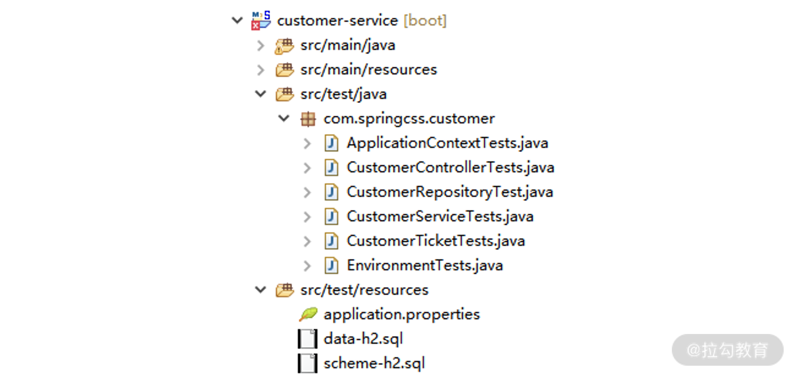

- 00 开篇词 从零开始：为什么要学习 Spring Boot？.md.html
- 01 家族生态：如何正确理解 Spring 家族的技术体系？.md.html
- 02 案例驱动：如何剖析一个 Spring Web 应用程序？.md.html
- 03 多维配置：如何使用 Spring Boot 中的配置体系？.md.html
- 04 定制配置：如何创建和管理自定义的配置信息？.md.html
- 05 自动配置：如何正确理解 Spring Boot 自动配置实现原理？.md.html
- 06 基础规范：如何理解 JDBC 关系型数据库访问规范？.md.html
- 07 数据访问：如何使用 JdbcTemplate 访问关系型数据库？.md.html
- 08 数据访问：如何剖析 JdbcTemplate 数据访问实现原理？.md.html
- 09 数据抽象：Spring Data 如何对数据访问过程进行统一抽象？.md.html
- 10 ORM 集成：如何使用 Spring Data JPA 访问关系型数据库？.md.html
- 11 服务发布：如何构建一个 RESTful 风格的 Web 服务？.md.html
- 12 服务调用：如何使用 RestTemplate 消费 RESTful 服务？.md.html
- 13 服务调用：如何正确理解 RestTemplate 远程调用实现原理？.md.html
- 14 消息驱动：如何使用 KafkaTemplate 集成 Kafka？.md.html
- 15 消息驱动：如何使用 JmsTemplate 集成 ActiveMQ？.md.html
- 16 消息驱动：如何使用 RabbitTemplate 集成 RabbitMQ？.md.html
- 17 安全架构：如何理解 Spring 安全体系的整体架构？.md.html
- 18 用户认证：如何基于 Spring Security 构建用户认证体系？.md.html
- 19 服务授权：如何基于 Spring Security 确保请求安全访问？.md.html
- 20 服务监控：如何使用 Actuator 组件实现系统监控？.md.html
- 21 指标定制：如何实现自定义度量指标和 Actuator 端点？.md.html
- 22 运行管理：如何使用 Admin Server 管理 Spring 应用程序？.md.html
- 23 数据测试：如何使用 Spring 测试数据访问层组件？.md.html
- 24 服务测试：如何使用 Spring 测试 Web 服务层组件？.md.html
- 结束语 以终为始：Spring Boot 总结和展望.md.html
23 数据测试：如何使用 Spring 测试数据访问层组件？
作为整个课程最后一部分内容，从这一讲开始，我们将讨论 Spring 提供的测试解决方案。对于 Web 应用程序而言，测试是一个难点，也是经常被忽略的一套技术体系。一个应用程序中涉及数据层、服务层、Web 层，以及各种外部服务之间的交互关系时，我们除了对各层组件的单元测试之外，还需要充分引入集成测试保证服务的正确性和稳定性。
Spring Boot 中的测试解决方案
和 Spring Boot 1.x 版本一样，Spring Boot 2.x 也提供了一个用于测试的 spring-boot-starter-test 组件。
在 Spring Boot 中，集成该组件的方法是在 pom 文件中添加如下所示依赖：
<dependency>
<groupId>org.springframework.boot</groupId>
<artifactId>spring-boot-starter-test</artifactId>
<scope>test</scope>
</dependency>
<dependency>
<groupId>org.junit.platform</groupId>
<artifactId>junit-platform-launcher</artifactId>
<scope>test</scope>
</dependency>
其中，最后一个依赖用于导入与 JUnit 相关的功能组件。
然后，通过 Maven 查看 spring-boot-starter-test 组件的依赖关系，我们可以得到如下所示的组件依赖图：

spring-boot-starter-test 组件的依赖关系图
在《案例驱动：如何剖析一个 Spring Web 应用程序？》中我们提到，Spring Boot 使得编码、配置、部署和监控工作更简单。事实上，Spring Boot 也能让测试工作更加简单。
从上图中可以看到，在代码工程的构建路径中，我们引入了一系列组件初始化测试环境。比如 JUnit、JSON Path、AssertJ、Mockito、Hamcrest 等，这里我们有必要对这些组件进行展开说明。
- JUnit：JUnit 是一款非常流行的基于 Java 语言的单元测试框架，在我们的课程中主要使用该框架作为基础的测试框架。
- JSON Path：类似于 XPath 在 XML 文档中的定位，JSON Path 表达式通常用来检索路径或设置 JSON 文件中的数据。
- AssertJ：AssertJ 是一款强大的流式断言工具，它需要遵守 3A 核心原则，即 Arrange（初始化测试对象或准备测试数据）——> Actor（调用被测方法）——>Assert（执行断言）。
- Mockito：Mockito 是 Java 世界中一款流行的 Mock 测试框架，它主要使用简洁的 API 实现模拟操作。在实施集成测试时，我们将大量使用到这个框架。
- Hamcrest：Hamcrest 提供了一套匹配器（Matcher），其中每个匹配器的设计用于执行特定的比较操作。
- JSONassert：JSONassert 是一款专门针对 JSON 提供的断言框架。
- Spring Test & Spring Boot Test：为 Spring 和 Spring Boot 框架提供的测试工具。
以上组件的依赖关系都是自动导入，我们无须做任何变动。而对于某些特定场景而言，就需要我们手工导入一些组件以满足测试需求，例如引入专用针对测试场景的嵌入式关系型数据库 H2。
测试 Spring Boot 应用程序
接下来，我们将初始化 Spring Boot 应用程序的测试环境，并介绍如何在单个服务内部完成单元测试的方法和技巧。
导入 spring-boot-starter-test 依赖后，我们就可以使用它提供的各项功能应对复杂的测试场景了。
初始化测试环境
对于 Spring Boot 应用程序而言，我们知道其 Bootstrap 类中的 main() 入口将通过 SpringApplication.run() 方法启动 Spring 容器，如下所示的 CustomerApplication 类就是一个典型的 Spring Boot 启动类 ：
@SpringBootApplication
public class CustomerApplication {
public static void main(String[] args) {
SpringApplication.run(CustomerApplication.class, args);
}
}
针对上述 Bootstrap 类，我们可以通过编写测试用例的方式，验证 Spring 容器能否正常启动。
为了添加测试用例，我们有必要梳理一下代码的组织结构，梳理完后就呈现了如下图所示的customer-service 工程中代码的基本目录结构。

customer-service 工程代码目录结构
基于 Maven 的默认风格，我们将在 src/test/java 和 src/test/resources 包下添加各种测试用例代码和配置文件，正如上图所示。
打开上图中的 ApplicationContextTests.java 文件，我们可以得到如下所示的测试用例代码：
import org.junit.Assert;
import org.junit.Test;
import org.junit.runner.RunWith;
import org.springframework.beans.factory.annotation.Autowired;
import org.springframework.boot.test.context.SpringBootTest;
import org.springframework.context.ApplicationContext;
import org.springframework.test.context.junit4.SpringRunner;
@SpringBootTest
@RunWith(SpringRunner.class)
public class ApplicationContextTests {
@Autowired
private ApplicationContext applicationContext;
@Test
public void testContextLoads() throws Throwable {
Assert.assertNotNull(this.applicationContext);
}
}
该代码中的 testContextLoaded() 就是一个有效的测试用例，这里我们可以看到该用例对 Spring 中的 ApplicationContext 作了简单非空验证。
执行该测试用例后，从输出的控制台信息中，我们可以看到 Spring Boot 应用程序被正常启动，同时测试用例本身也会给出执行成功的提示。
上述测试用例虽然简单，但是已经包含了测试 Spring Boot 应用程序的基本代码框架。其中，最重要的是 ApplicationContextTests 类上的 @SpringBootTest 和 @RunWith 注解，对于 Spring Boot 应用程序而言，这两个注解构成了一套完成的测试方案。
接下来我们对这两个注解进行详细展开。
@SpringBootTest 注解
因为 SpringBoot 程序的入口是 Bootstrap 类，所以 SpringBoot 专门提供了一个 @SpringBootTest 注解测试 Bootstrap 类。同时 @SpringBootTest 注解也可以引用 Bootstrap 类的配置，因为所有配置都会通过 Bootstrap 类去加载。
在上面的例子中，我们是通过直接使用 @SpringBootTest 注解提供的默认功能对作为 Bootstrap 类的 Application 类进行测试。而更常见的做法是在 @SpringBootTest 注解中指定该 Bootstrap 类，并设置测试的 Web 环境，如下代码所示。
@SpringBootTest(classes = CustomerApplication.class,
webEnvironment = SpringBootTest.WebEnvironment.MOCK)
在以上代码中，@SpringBootTest 注解中的 webEnvironment 可以有四个选项，分别是 MOCK、RANDOM_PORT、DEFINED_PORT 和 NONE。
- MOCK：加载 WebApplicationContext 并提供一个 Mock 的 Servlet 环境，此时内置的 Servlet 容器并没有正式启动。
- RANDOM_PORT：加载 EmbeddedWebApplicationContext 并提供一个真实的 Servlet 环境，然后使用一个随机端口启动内置容器。
- DEFINED_PORT：这个配置也是通过加载 EmbeddedWebApplicationContext 提供一个真实的 Servlet 环境，但使用的是默认端口，如果没有配置端口就使用 8080。
- NONE：加载 ApplicationContext 但并不提供任何真实的 Servlet 环境。
在 Spring Boot 中，@SpringBootTest 注解主要用于测试基于自动配置的 ApplicationContext，它允许我们设置测试上下文中的 Servlet 环境。
在多数场景下，一个真实的 Servlet 环境对于测试而言过于重量级，通过 MOCK 环境则可以缓解这种环境约束所带来的成本和挑战。在 22 讲《服务测试：如何使用Spring测试Web服务层组件？》中，我们将结合 WebEnvironment.MOCK 选项对服务层中的具体功能进行集成测试。
@RunWith 注解与 SpringRunner
在上面的示例中，我们还看到一个由 JUnit 框架提供的 @RunWith 注解，它用于设置测试运行器。例如，我们可以通过 @RunWith(SpringJUnit4ClassRunner.class) 让测试运行于 Spring 测试环境。
虽然这我们指定的是 SpringRunner.class，实际上，SpringRunner 就是 SpringJUnit4ClassRunner 的简化，它允许 JUnit 和 Spring TestContext 整合运行，而 Spring TestContext 则提供了用于测试 Spring 应用程序的各项通用的支持功能。
在后续的测试用例中，我们将大量使用 SpringRunner。
执行测试用例
在这一讲中，我们还将通过代码示例回顾如何使用 JUnit 框架执行单元测试的过程和实践，同时提供验证异常和验证正确性的测试方法。
单元测试的应用场景是一个独立的类，如下所示的 CustomerTicket 类就是一个非常典型的独立类：
public class CustomerTicket {
private Long id;
private Long accountId;
private String orderNumber;
private String description;
private Date createTime;
public CustomerTicket(Long accountId, String orderNumber) {
super();
Assert.notNull(accountId, "Account Id must not be null");
Assert.notNull(orderNumber, "Order Number must not be null");
Assert.isTrue(orderNumber.length() == 10, "Order Number must be exactly 10 characters");
this.accountId = accountId;
this.orderNumber = orderNumber;
}
…
}
从中我们可以看到，该类对客服工单做了封装，并在其构造函数中添加了校验机制。
下面我们先来看看如何对正常场景进行测试。
例如 CustomerTicket 中orderNumber 的长度问题，我们可以使用如下测试用例，通过在构造函数中传入字符串来验证规则的正确性：
@RunWith(SpringRunner.class)
public class CustomerTicketTests {
private static final String ORDER_NUMBER = "Order00001";
@Test
public void testOrderNumberIsExactly10Chars() throws Exception {
CustomerTicket customerTicket = new CustomerTicket(100L, ORDER_NUMBER);
assertThat(customerTicket.getOrderNumber().toString()).isEqualTo(ORDER_NUMBER);
}
}
执行这个单元测试后，我们就可以看到执行的过程及结果。
而这些单元测试用例只是演示了最基本的测试方式，后续的各种测试机制我们将在此基础上进行扩展和演化。
使用 @DataJpaTest 注解测试数据访问组件
数据需要持久化，接下来我们将从数据持久化的角度出发，讨论如何对 Repository 层进行测试的方法。
首先，我们讨论一下使用关系型数据库的场景，并引入针对 JPA 数据访问技术的 @DataJpaTest 注解。
@DataJpaTest 注解会自动注入各种 Repository 类，并初始化一个内存数据库和及访问该数据库的数据源。在测试场景下，一般我们可以使用 H2 作为内存数据库，并通过 MySQL 实现数据持久化，因此我们需要引入以下所示的 Maven 依赖：
<dependency>
<groupId>com.h2database</groupId>
<artifactId>h2</artifactId>
</dependency>
<dependency>
<groupId>mysql</groupId>
<artifactId>mysql-connector-java</artifactId>
<scope>runtime</scope>
</dependency>
另一方面，我们需要准备数据库 DDL 用于初始化数据库表，并提供 DML 脚本完成数据初始化。其中，schema-mysql.sql 和 data-h2.sql 脚本分别充当了 DDL 和 DML 的作用。
在 customer-service 的 schema-mysql.sql 中包含了 CUSTOMER 表的创建语句，如下代码所示：
DROP TABLE IF EXISTS `customerticket`;
create table `customerticket` (
`id` bigint(20) NOT NULL AUTO_INCREMENT,
`account_id` bigint(20) not null,
`order_number` varchar(50) not null,
`description` varchar(100) not null,
`create_time` timestamp not null DEFAULT CURRENT_TIMESTAMP,
PRIMARY KEY (`id`)
);
而在 data-h2.sql 中，我们插入了一条测试需要使用的数据，具体的初始化数据过程如下代码所示：
INSERT INTO customerticket (`account_id`, `order_number`,`description`) values (1, 'Order00001', ' DemoCustomerTicket1');
接下来是提供具体的 Repository 接口，我们先通过如下所示代码回顾一下 CustomerRepository 接口的定义。
public interface CustomerTicketRepository extends JpaRepository<CustomerTicket, Long> {
List<CustomerTicket> getCustomerTicketByOrderNumber(String orderNumber);
}
这里存在一个方法名衍生查询 getCustomerTicketByOrderNumber，它会根据 OrderNumber 获取 CustomerTicket。
基于上述 CustomerRepository，我们可以编写如下所示的测试用例：
@RunWith(SpringRunner.class)
@DataJpaTest
public class CustomerRepositoryTest {
@Autowired
private TestEntityManager entityManager;
@Autowired
private CustomerTicketRepository customerTicketRepository;
@Test
public void testFindCustomerTicketById() throws Exception {
this.entityManager.persist(new CustomerTicket(1L, "Order00001", "DemoCustomerTicket1", new Date()));
CustomerTicket customerTicket = this.customerTicketRepository.getOne(1L);
assertThat(customerTicket).isNotNull();
assertThat(customerTicket.getId()).isEqualTo(1L);
}
@Test
public void testFindCustomerTicketByOrderNumber() throws Exception {
String orderNumber = "Order00001";
this.entityManager.persist(new CustomerTicket(1L, orderNumber, "DemoCustomerTicket1", new Date()));
this.entityManager.persist(new CustomerTicket(2L, orderNumber, "DemoCustomerTicket2", new Date()));
List<CustomerTicket> customerTickets = this.customerTicketRepository.getCustomerTicketByOrderNumber(orderNumber);
assertThat(customerTickets).size().isEqualTo(2);
CustomerTicket actual = customerTickets.get(0);
assertThat(actual.getOrderNumber()).isEqualTo(orderNumber);
}
@Test
public void testFindCustomerTicketByNonExistedOrderNumber() throws Exception {
this.entityManager.persist(new CustomerTicket(1L, "Order00001", "DemoCustomerTicket1", new Date()));
this.entityManager.persist(new CustomerTicket(2L, "Order00002", "DemoCustomerTicket2", new Date()));
List<CustomerTicket> customerTickets = this.customerTicketRepository.getCustomerTicketByOrderNumber("Order00003");
assertThat(customerTickets).size().isEqualTo(0);
}
}
这里可以看到，我们使用了 @DataJpaTest 实现 CustomerRepository 的注入。同时，我们还注意到另一个核心测试组件 TestEntityManager，它的效果相当于不使用真正的 CustomerRepository 完成数据的持久化，从而提供了一种数据与环境之间的隔离机制。
执行这些测试用例后，我们需要关注它们的控制台日志输入，其中核心日志如下所示（为了显示做了简化处理）：
Hibernate: drop table customer_ticket if exists
Hibernate: drop sequence if exists hibernate_sequence
Hibernate: create sequence hibernate_sequence start with 1 increment by 1
Hibernate: create table customer_ticket (id bigint not null, account_id bigint, create_time timestamp, description varchar(255), order_number varchar(255), primary key (id))
Hibernate: create table localaccount (id bigint not null, account_code varchar(255), account_name varchar(255), primary key (id))
…
Hibernate: call next value for hibernate_sequence
Hibernate: call next value for hibernate_sequence
Hibernate: insert into customer_ticket (account_id, create_time, description, order_number, id) values (?, ?, ?, ?, ?)
Hibernate: insert into customer_ticket (account_id, create_time, description, order_number, id) values (?, ?, ?, ?, ?)
Hibernate: select customerti0_.id as id1_0_, customerti0_.account_id as account_2_0_, customerti0_.create_time as create_t3_0_, customerti0_.description as descript4_0_, customerti0_.order_number as order_nu5_0_ from customer_ticket customerti0_ where customerti0_.order_number=?
…
Hibernate: drop table customer_ticket if exists
Hibernate: drop sequence if exists hibernate_sequence
从以上日志中，我们不难看出执行各种 SQL 语句的效果，此时你也可以修改这些测试用例，并观察执行结果。
小结与预告
测试是一套独立的技术体系，需要开发人员充分重视且付诸实践，这点对于 Web 应用程序测试而言更是如此。这一讲我们基于 Spring Boot 给出了完整的测试方法和核心注解，并针对关系型数据库给出了数据访问组件的测试过程。
这里给你留一道思考题：在使用 Spring Boot 执行测试用例时，如何基于内存数据库完成数据访问过程的测试？欢迎你在留言区与我交流、互动哦~
介绍完数据库访问测试之后，24 讲我们将讨论如何对 Web 服务层组件进行测试。